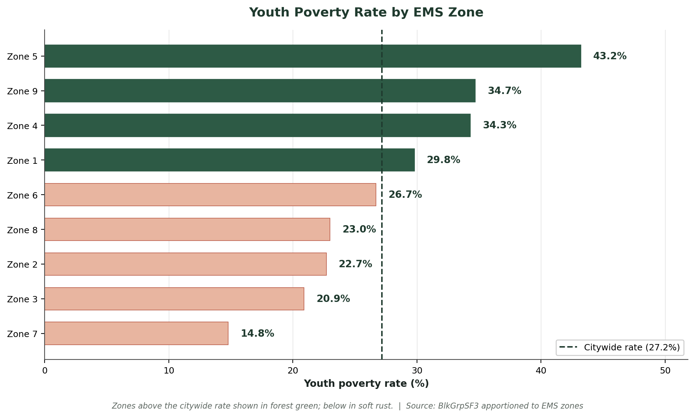
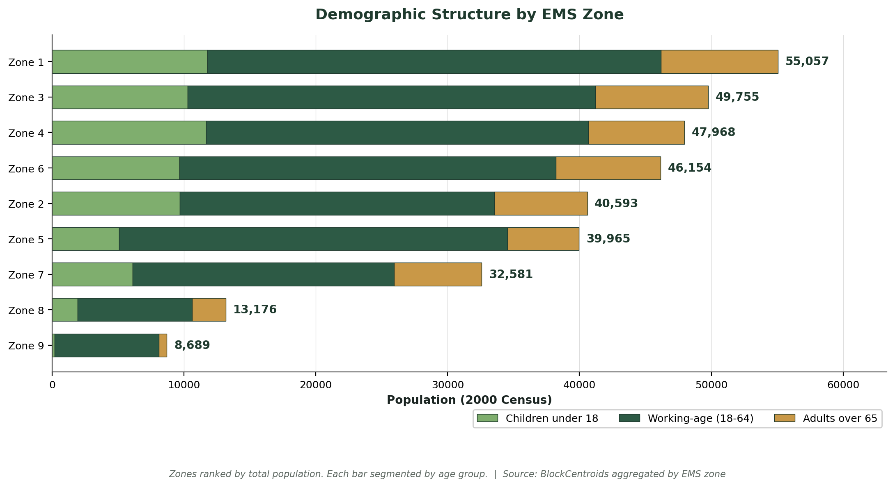
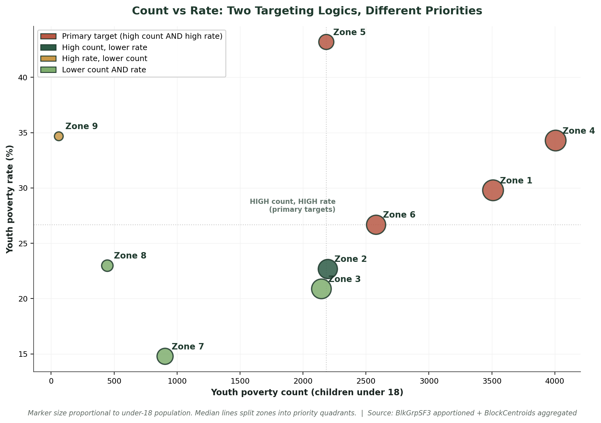
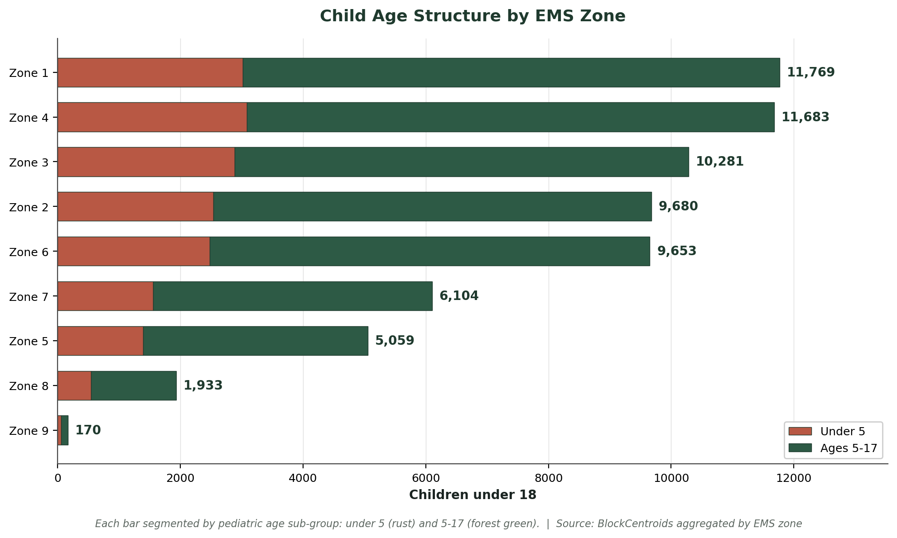

A spatial analysis of population, demographic structure, and youth poverty across Pittsburgh's nine emergency medical service zones — supporting federal preparedness targeting under CDC PHEP and HRSA MCH Block Grant frameworks.
Four complementary views of the EMS zone data. The first three answer ranking questions; the fourth reveals the methodological tension at the heart of vulnerability-based targeting.
Zones above the citywide rate (27.2%) are shown in forest green; zones below are shown in soft rust. Zone 5 stands out as the clear outlier at 43.2%.

Each bar shows the demographic composition of one zone, segmented into children under 18, working-age adults, and adults over 65. Zone 1 (55,057 residents) is the largest.

Each dot is an EMS zone, sized by under-18 population. The X axis is absolute youth poverty count; the Y axis is poverty rate. Median lines divide the chart into four quadrants. Rust dots in the upper-right are "primary targets" (high count AND high rate) — these are the most defensible priorities for federal vulnerability-targeted funding. Forest green dots (high count, lower rate) and gold dots (high rate, lower count) are secondary priorities depending on the targeting logic chosen. This chart shows visually why a single-metric ranking — by count alone or rate alone — produces different recommendations.

Each zone's under-18 population is segmented into under-5 (rust) and 5-17 (forest green) sub-groups. This distinction matters for EMS preparedness because pediatric emergency response protocols differ significantly between infant/toddler and school-age children.

Both have high absolute youth poverty counts (4,006 and 3,509) and rates above the citywide average. With large enough denominators (11,683 and 11,769 children) for the rates to be statistically stable, they are the most defensible priorities under federal vulnerability-targeted preparedness frameworks.
At 43.2%, Zone 5 has the highest youth poverty rate in the city, well above the 27.2% citywide average. With 2,185 children in poverty, it captures real burden — not just a small-denominator artifact. This is the strongest case for rate-based targeting.
Zone 9's 34.7% poverty rate is computed from only 170 children — a denominator too small for the rate to be statistically stable. Federal allocation frameworks should treat Zone 9's rate as a flag for further investigation rather than a comparison to other zones.
Pediatric-to-adult ratios, under-5 share of children, and over-65 populations all vary across zones. EMS protocols differ for pediatric vs geriatric vs adult-onset emergencies; allocation should reflect demographic asymmetry, not just total population.
Two sub-assignments synthesized into one analysis: Assignment 8-1 aggregates total population, under-18, and over-65 across EMS zones via spatial join of block centroids. Assignment 8-2 apportions youth poverty from the block-group level down to centroids via population weighting, then aggregates to EMS zones.
The apportionment formula:
This standard demographic apportionment assumes poverty is distributed proportionally to under-18 population within each block group.
| Source | Variables | Vintage |
|---|---|---|
| Pittsburgh.gdb / EMSZones | Emergency medical service zone polygons (after dissolve by ZONE) | Operational vintage |
| Pittsburgh.gdb / BlockCentroids | POP2000, AGE_UNDER5, AGE_5_17, AGE_65_UP per census block | 2000 U.S. Census |
| Pittsburgh.gdb / BlkGrpSF1 | Block-group under-18 population (denominator for apportionment) | 2000 U.S. Census |
| Pittsburgh.gdb / BlkGrpSF3 | POVUndr18 — block-group youth poverty count | 2000 U.S. Census |
notebooks/assignment_8_ems_zones.ipynb, and run all cells. First run takes ~2 minutes; subsequent runs under 1 minute.